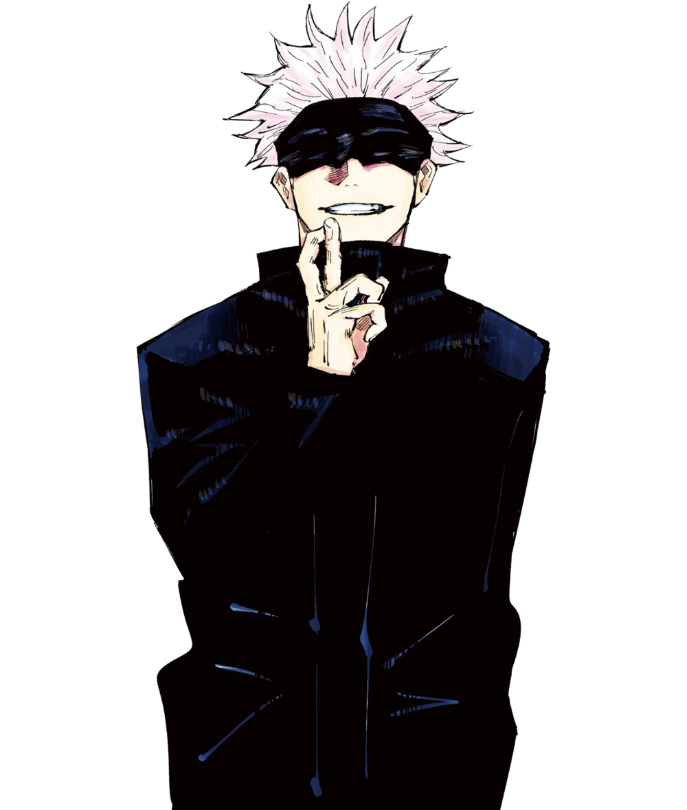
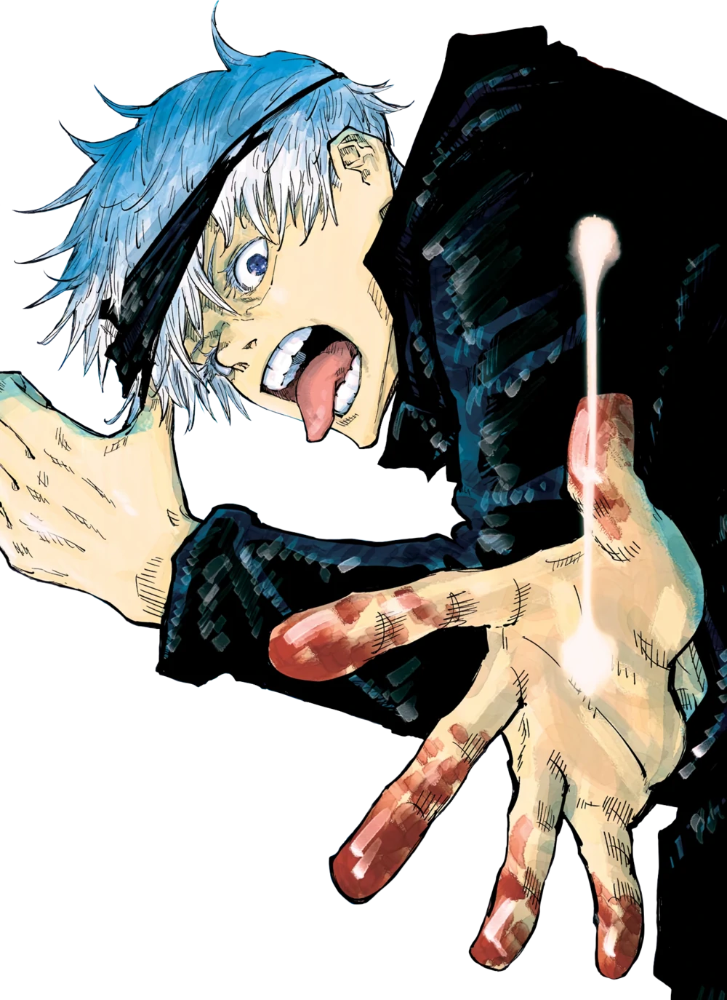
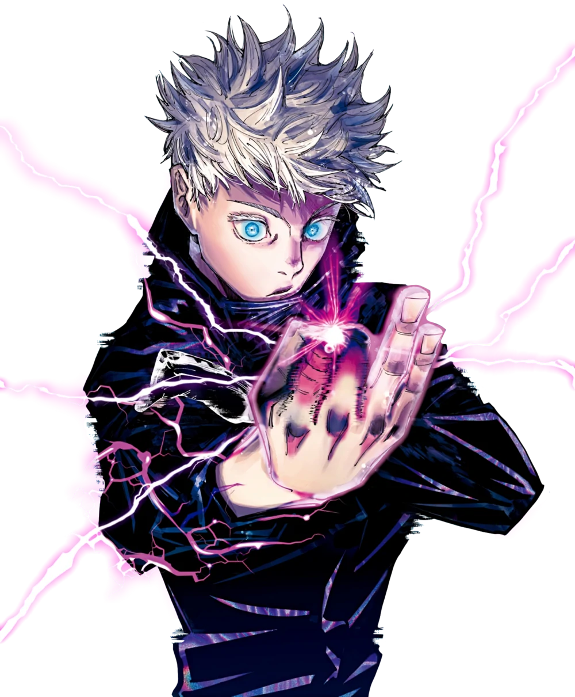
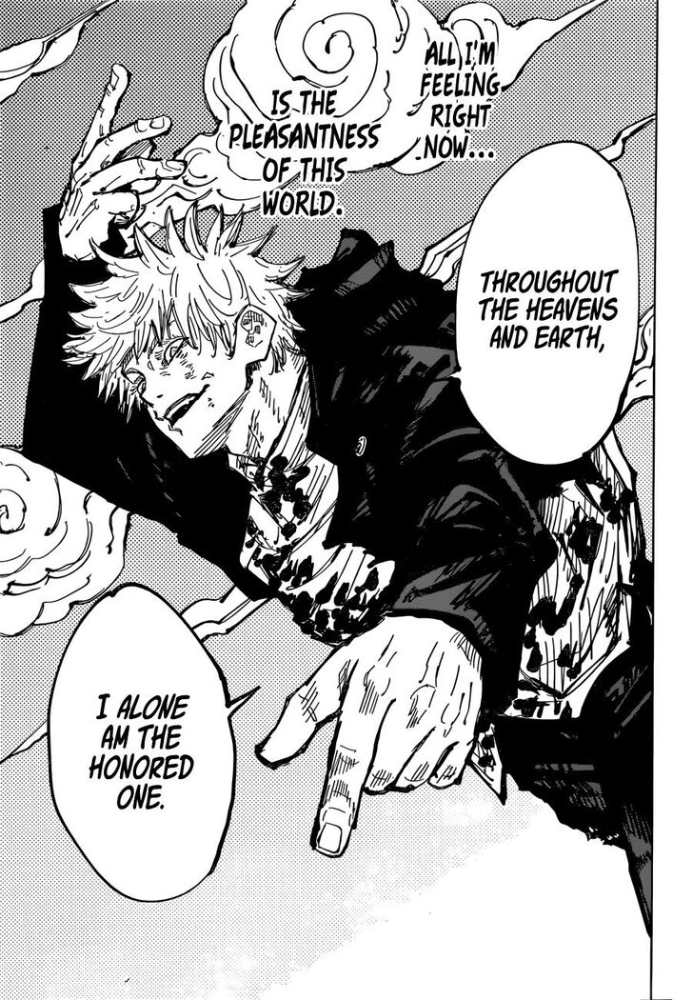

Basic Info
Facts and Trivia
Image Gallery
Basic Info
General
Appearance
Personality
Satoru Gojo is one of the main protagonists of the Jujutsu Kaisen series. He is a special grade jujutsu sorcerer and strongest in the world often called the pinnacle of the jujutsu world. Satoru Gojo was born on December 7, 1989. After he was born, the balance of power shifted and Gojo had a bounty put on his head and was targeted by bounty hunters. Due to this, Satoru is the pride of the Gojo Family, the first person to inherit both the Limitless and the Six Eyes in four hundred years. Currently, he works as a teacher at the Tokyo Jujutsu High and uses his influence to protect and train strong young allies.
Satoru Gojo is a tall man, towering over his students, and is considered to be very attractive by many people. He has white hair that's often spiked up, but Gojo lets it down when he's in more casual attire. Gojo has bright blue eyes, but they're usually covered by his signature black blindfold or a pair of dark sunglasses. While working, Gojo wears an all-black high-necked jacket with matching pants and dark dress boots. In the past, Gojo has worn bandages over his eyes rather than his simple blindfold. He has several casual attires that usually include long-sleeved shirts and slacks. He even wears long-sleeved hoodies to the beach with black swim trunks.
Satoru Gojo is a complex individual. He is normally seen to be nonchalant and playful towards his students, close colleagues, and friends. However, he is unsympathetic and cruel towards sorcerer executives and his enemies. Satoru is extremely confident in his abilities and reputation as a powerful sorcerer, believing himself to be invincible. His opinion of others often only go as far as his judgement of their strength, and he is quite apathetic towards anyone he deems weak. Additionally, greatly influenced by his own desire for power, he is very arrogant. With all that said, there is a human side to him. Furthermore, Satoru was later left visibly horrified and panicked after learning that Suguru, his one and only best friend, had become a murderous curse user. Satoru attempted to reason with his friend, but eventually realized and accepted that he lost the one person he truly saw as an equal. After having to put an end to Suguru before more calamity arose, it was Satoru's trauma over losing his best friend that caused his ultimate downfall in Shibuya. He was also distraught when Yuji seemingly died. Satoru's endgame is to reform the jujutsu world from the bottom-up through education. He seeks to foster a new generation of sorcerers that he hopes will one day become his equals.
Facts and Trivia
Topic
Fact
Age
28
Birthday
December 7th
Grade
Special Grade Sorcerer
Enrollment Method
Family lineage
Cursed Technique
Limitless
Skills
Cursed Technique Reversal: Red, Cursed Technique Lapse: Blue, Hollow Purple, Domain Expansion: Unlimited Void, Reverse Cursed Technique, some experience with Black Flash
Hobby/Special Skill
None - He can do practically anything he attempts
Favorite Food
Any kind of sweet food
Least Favorite Food
Alcohol
Cause of Stress
Interacting with the higher-ups
Image Gallery
Click on the arrows to view the next/previous images




Previous
Next